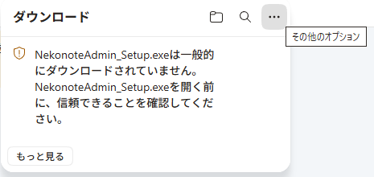
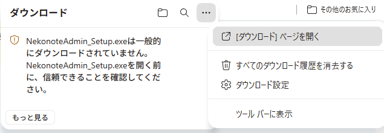
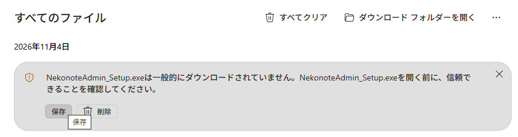

9つの強み どれも、技工所の実際の仕事に合わせました
単価
コードを打つだけで、医院ごとの単価
医院ごとの商品表から、製作物と単価が入ります。カーソルは（ ）の中へ。
金属・BU
Pd の合計と BU 支援料を自動計算
グラム数を合計した金属の行と、BU の行を自動で入れます。
ブリッジ
Br は小窓で選ぶだけ
In①FMC② のように中身を選ぶと、単価を足し算して備考にも書きます。
歯冠
受付カードから一括で納品書
模型が届いたらカードに入力。納品の日に、医院ごとの納品書をまとめて作ります。
納品日
納品日は自動で決まる
医院の訪問曜日・当日納品できる時刻・休日から計算します。祝日も自動。
請求
締日ごとの明細請求書
前回請求・入金・繰越・消費税を計算。インボイスの登録番号つき。紙でも PDF でも。PDF はそのまま医院へメールで送れます。
預かり金属
月末メタル報告を Excel で
医院から預かった金属の出入りと残りを、医院ごとの報告書にします。
入力
キーボードだけで速い
Enter で次の欄へ。日付は 26/11/1、名前は yamada → ヤマダ。
乗りかえ
Access から引っ越し
今の Access の商品・単価・医院・繰越残高を取り込めます。元のファイルは書き換えません。
安心して使えるように
- データは技工所のパソコンの中だけ。医院や患者さんのデータを、インターネットに上げることはありません。請求書のメールも、技工所のメールから医院へ直接送ります。
- 毎日、自動でバックアップ。間違えても、前の状態に戻せます。USB メモリなどにも写せます。
- 新しい版は、画面のボタン1つで入れられます。データは消えません。
- キーボードが苦手でも大丈夫。スマホのフリック入力で打った文字を、パソコンの欄に入れられます（画面の QR コードを読むだけ。アプリは要りません。同じ Wi-Fi の中だけで届き、インターネットは通りません。Wi-Fi のルーターがなくても、スマホのテザリングで使えます）。
- 動作環境：Windows 11（64ビット）。画面は Microsoft Edge か Google Chrome で使います。
Windows 10 でも動きますが、マイクロソフトのサポートが終わっているため、正式な対応外です。Mac・タブレットでは使えません。
料金 表示はすべて税込みです
カード払い（毎月）
2,500円 / 月
- 毎月、自動でお支払い
- いつでも解約できます（お支払い済みの月の末まで使えます）
- 新しい版・サポートつき
銀行振込（半年ごと）
15,000円 / 6か月
- 6か月分を前払いでお振込み
- 途中で解約しても、残りの月の返金はありません
- 新しい版・サポートつき
パソコン1台ごとの契約です。お支払いが止まった場合は、7日のあとで「見るだけモード」になります（今までの伝票・請求書を見る・印刷する・PDF を作ることはできます。入力はできません）。お支払いを再開すると、すぐ元に戻ります。
はじめ方
- アプリを入れる インストール用のファイルをダウンロードして、「次へ → インストール → 完了」。管理者のパスワードは要りません。
「一般的にダウンロードされていません」と出たとき（写真つき）
使う人がまだ少ないアプリなので、Edge が念のため出しています。こわれたファイルやウイルスではありません。
- ① Edge の右上のダウンロードのマーク（↓）を押すと、警告の窓が出ます。②「ダウンロード」の右の …（その他のオプション）を押します。

- ③ [ダウンロード] ページを開く を押します。

- ④ 開いたページの「すべてのファイル」に出ている項目の 保存 を押します。保存できたら「ファイルを開く」を押します。

- 青い画面で「Windows によって PC が保護されました」と出たら、詳細情報 を押してから 実行 を押します。インストールの画面が出たら「次へ → インストール → 完了」です。
警告の窓の「詳細情報」や「このファイルは安全であることを報告する」を押しても、ダウンロードはできません。
- ① Edge の右上のダウンロードのマーク（↓）を押すと、警告の窓が出ます。②「ダウンロード」の右の …（その他のオプション）を押します。
- アプリで申し込む アプリを開くと「キーと版」の画面が出ます。会社名とメールアドレスを入れて［申し込む］を押すと、キーが自動で入り、メインメニューが出ます。これで使えます。
うまくいかないときは、同じ画面の「メールで申し込む」を押してください。宛先と申込コード（NK- で始まる、パソコンごとの番号）が入ったメールが開くので、そのまま送信します。メールが開かないときは、スマホなどから cathandlabo@gmail.com へ、画面の申込コードと会社名を書いて送ってください。キーのファイルをメールでお送りします。 - 初期設定をする 初期設定説明書（写真つき）のとおりに、会社の情報・医院・商品を入れます。アプリの［📱 スマホで入力・説明書］の QR コードから、スマホでも見られます。
- お支払いカード払いは、お支払いのあと、アプリの「今すぐキーを受け取る」を押すと使えるようになり、その後の更新も自動です。銀行振込は、メールで届くキーを「キーを入れる」で入れます。
お問い合わせ
ご質問は、メールでお気軽にどうぞ。